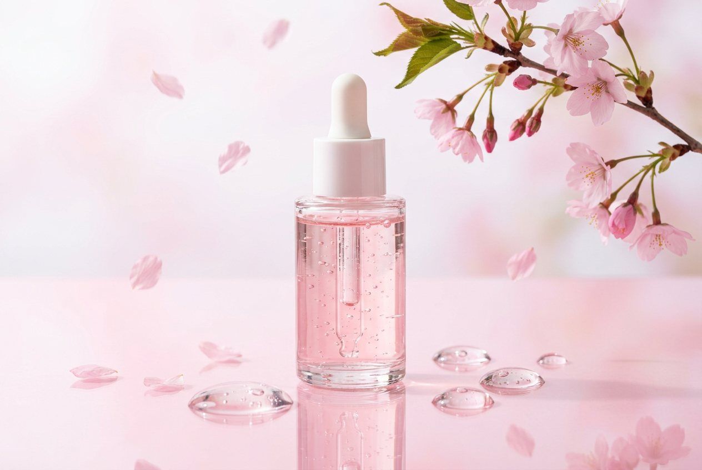
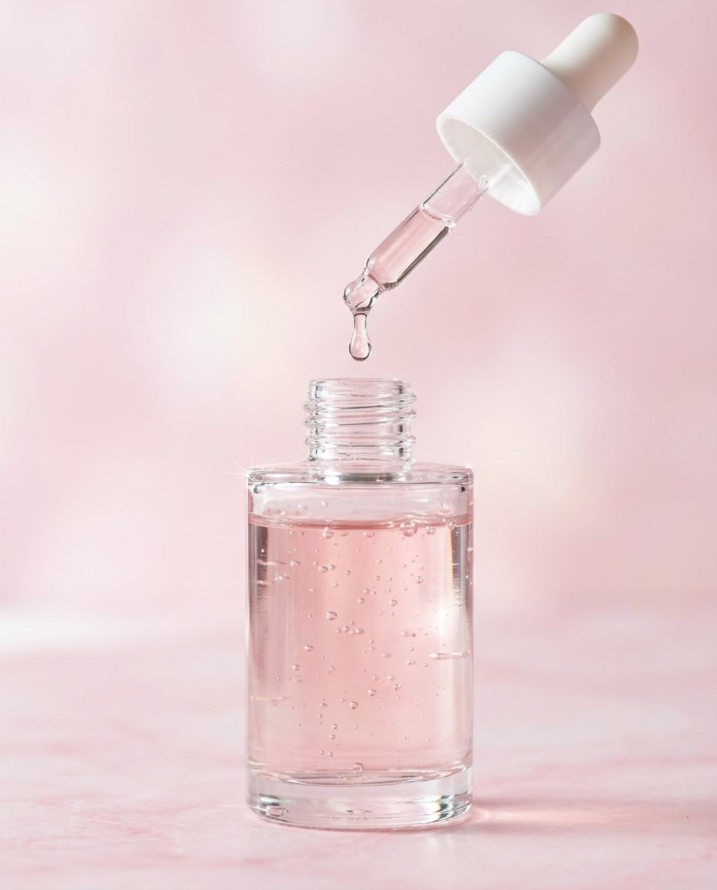
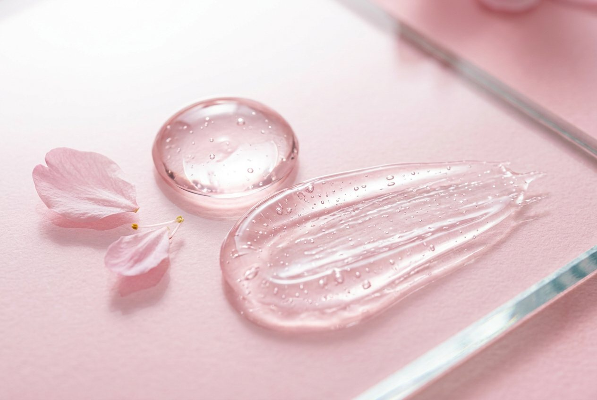
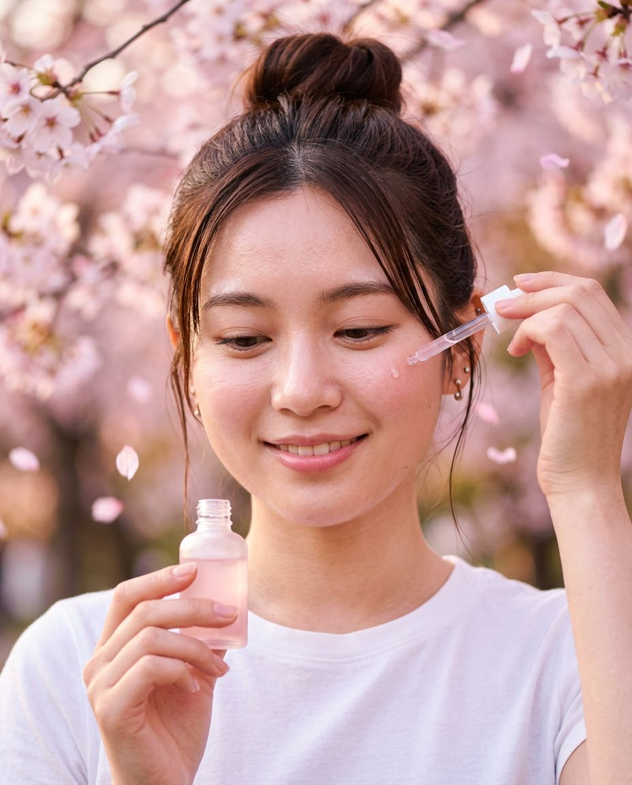
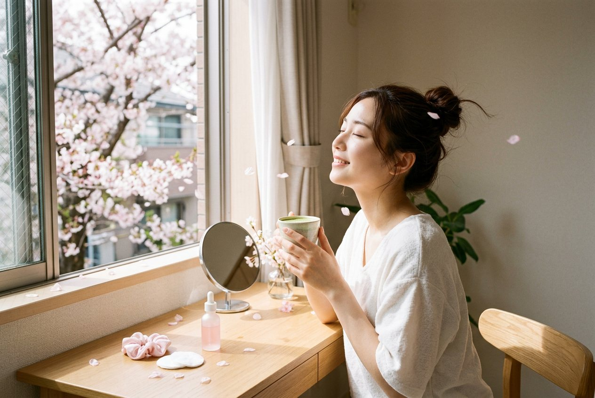

Fermented rice water
The milky water left from washing rice has been a beauty habit in Japan for centuries. We ferment it slowly, so skin feels softer and looks brighter from the first week.
- Softness
- Brightness
- Comfort

Tokyo spring, in a single drop.
30 mlAbout two months of mornings and nights.
SerumPale pink and weightless. It sinks in like water.

3 dropsEnough for the whole face and neck.
0%Added fragrance. The scent is the ingredients.
The milky water left from washing rice has been a beauty habit in Japan for centuries. We ferment it slowly, so skin feels softer and looks brighter from the first week.
Picked at full bloom, when the petals hold the most colour. It gives the serum its pale pink tint and a fresh, dewy finish that lasts all day.

No oils, no shine left behind. Just a dewy skin finish that sits well under sunscreen and make-up.
Example layout for a 4-week self-assessment with 30 participants, scored from 0 to 10. All figures on this page are invented to show how results would be presented.

Start on clean skin, still a little damp, so the serum spreads further.
Warm them between your fingertips for a second. Warm serum spreads further and sinks in faster.
Press your palms gently over cheeks, forehead and neck. Follow with moisturiser, and sunscreen in the morning.

Spring, every morning.
Kyami, made for the week the blossoms fall.